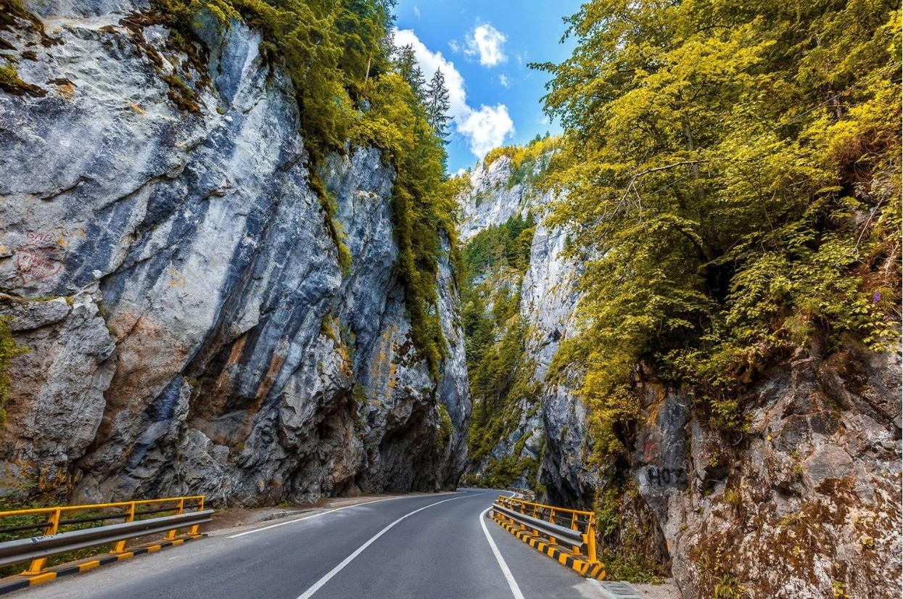
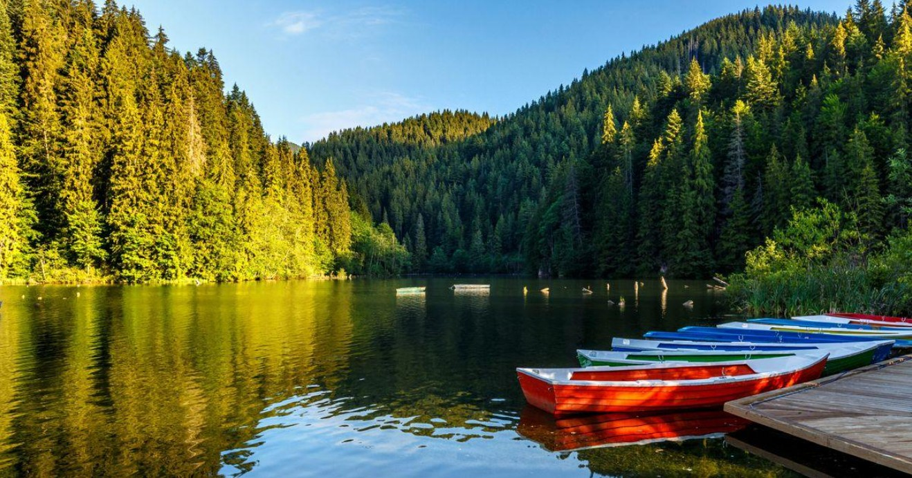
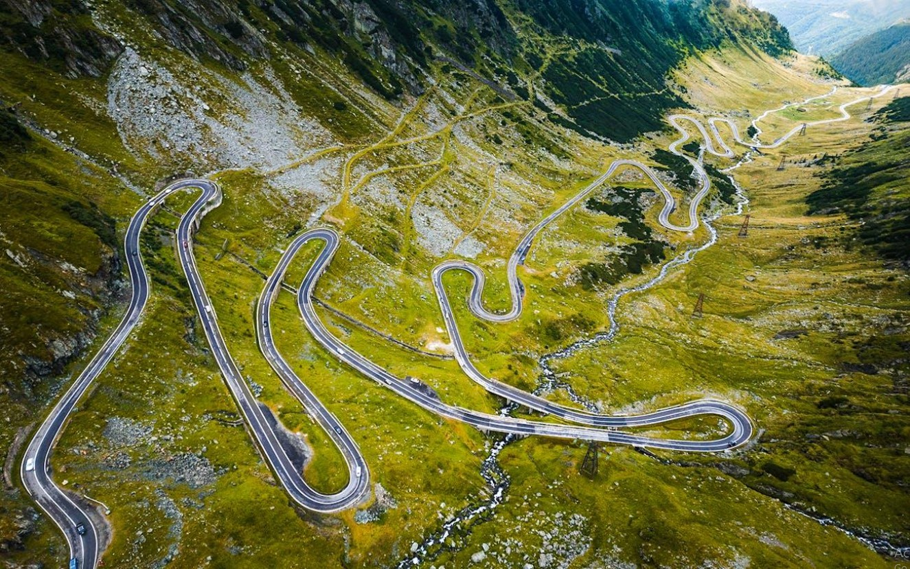
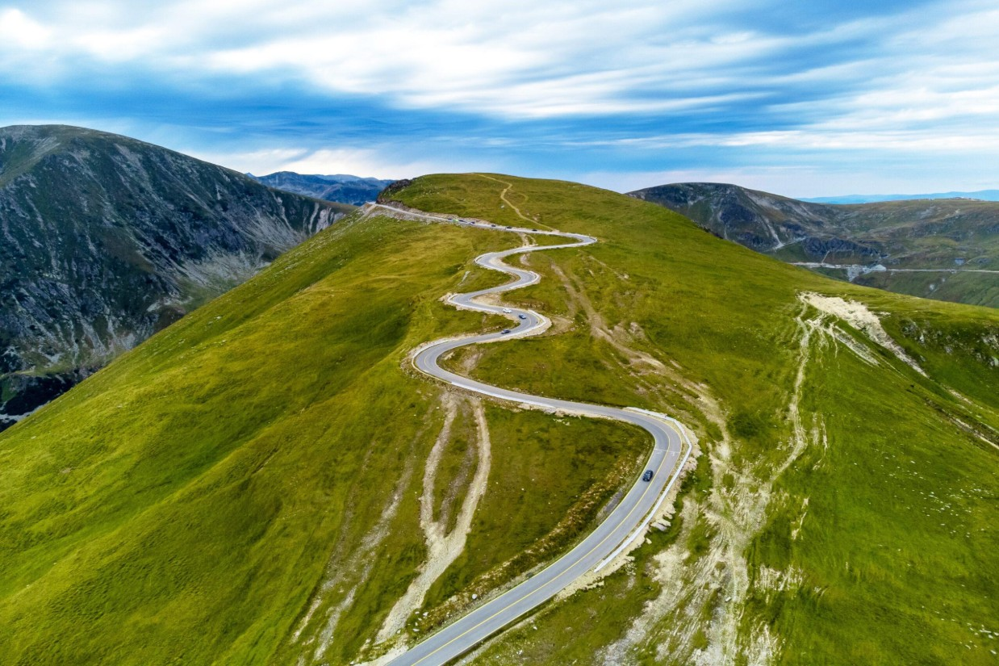
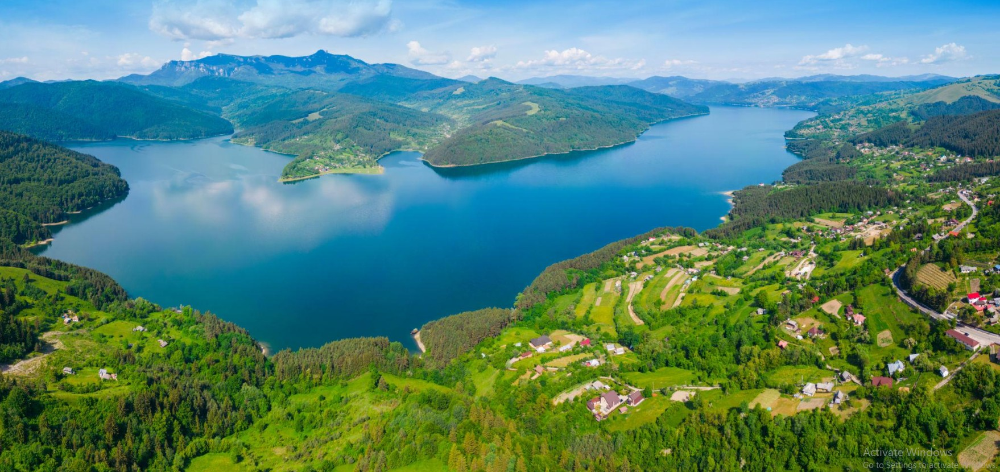
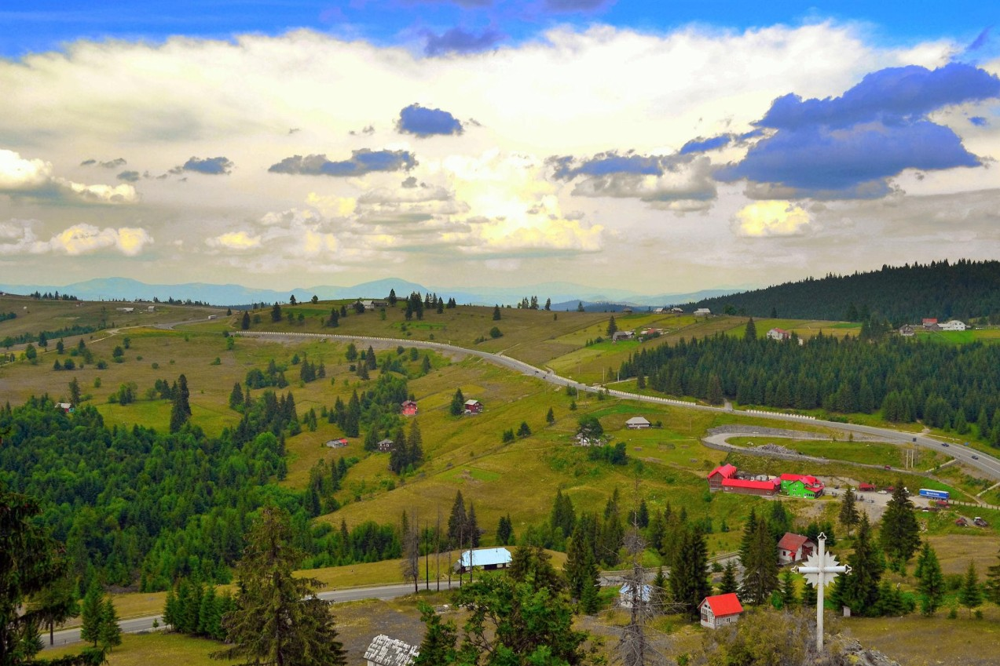
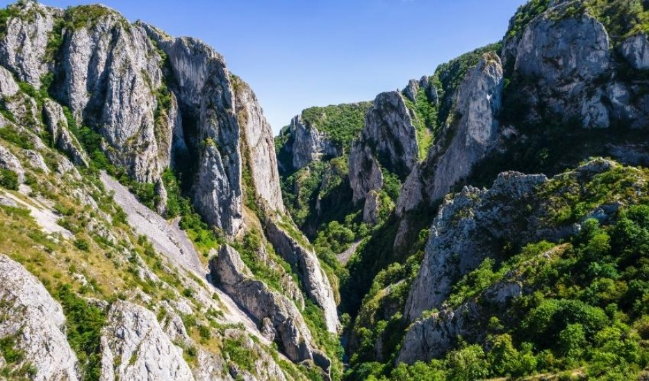
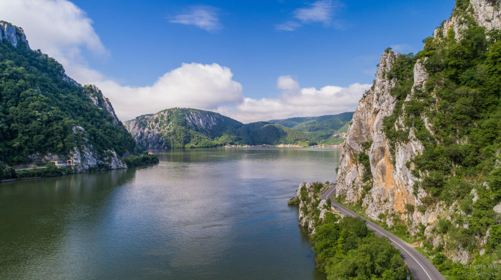

Descoperă locuri perfecte pentru o plimbare cu motocicleta.

📍 Județele Neamț și Harghita
Un traseu spectaculos printre stânci înalte, perfect pentru motocicliști.

📍 Județul Harghita
Un lac montan superb, ideal pentru o pauză în timpul unei plimbări.

📍 Județele Argeș și Sibiu
Unul dintre cele mai spectaculoase drumuri montane din România, cu serpentine impresionante.

📍 Munții Parâng
Un drum montan la altitudine mare, cu panorame extraordinare.

📍 Județul Neamț
Un traseu relaxant în apropierea lacului, cu priveliști spre Munții Ceahlău.

📍 Județele Bistrița-Năsăud și Suceava
Un traseu prin munți, cu peisaje frumoase și numeroase curbe.

📍 Județul Cluj
O destinație impresionantă pentru o excursie cu motocicleta și o oprire în natură.

📍 Județul Mehedinți
Un traseu deosebit pe malul Dunării, cu peisaje spectaculoase.